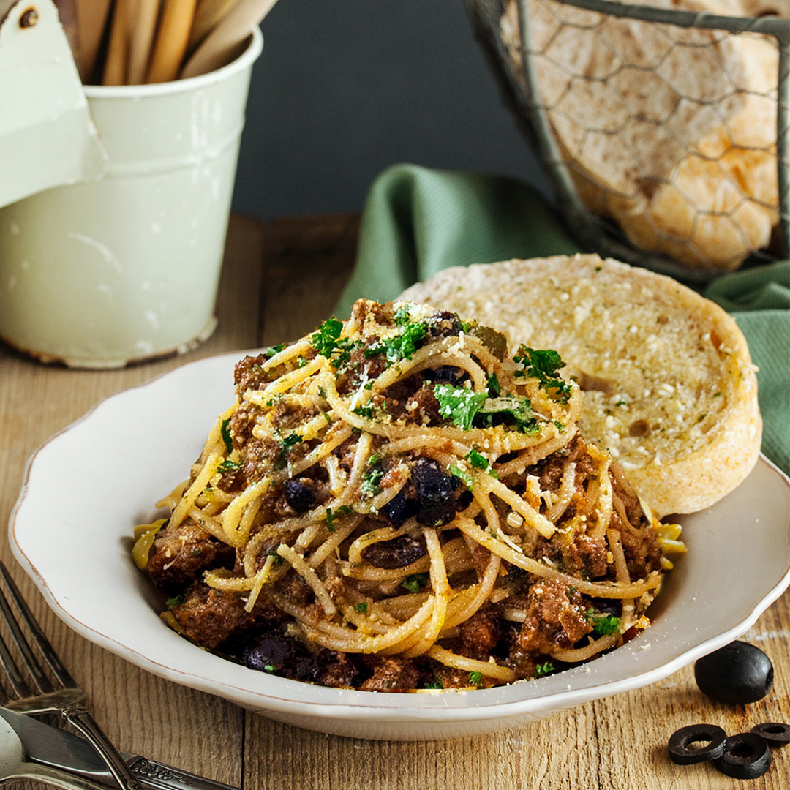

Tuna Pasta
Home

Description
Spanish Sardines Pasta is a light, savory dish featuring freshly cooked pasta tossed in a garlic and olive oil (aglio e olio) infusion
Ingredients
- Spanish Sardines
- Olives
- Garlic
- Tomatoes
- Mushrooms
- Olive Oil
- Pasta Noodles
Instructions
- Cook the pasta: Bring a large pot of salted water to a boil. Cook the pasta according to package instructions until al dente (usually 8–10 minutes). Reserve ½ cup of pasta water, then drain the noodles and set them aside.
- Crisp the garlic: Heat the 2 tablespoons of olive oil and the reserved oil from the sardine bottle in a large pan over low heat. Add the sliced garlic and sauté until it turns light golden brown and fragrant. Watch it closely so it does not burn.
- Sauté the vegetables: Toss in the diced tomatoes and sliced mushrooms. Cook for 2 to 3 minutes until the mushrooms soften and the tomatoes start to break down.
- Add the highlights: Stir in the sliced olives and the flaked Spanish sardines. Gently toss for about 1 minute just to heat the fish through without breaking it up completely. Season with a pinch of salt, black pepper, and red pepper flakes if you want a kick.
- Combine everything: Add the drained pasta directly into the pan. Pour in a splash of the reserved pasta water to help create a glossy sauce that coats the noodles. Toss everything together over low heat for 1 minute.
- Serve: Transfer to plates and top generously with grated parmesan cheese and fresh parsley.